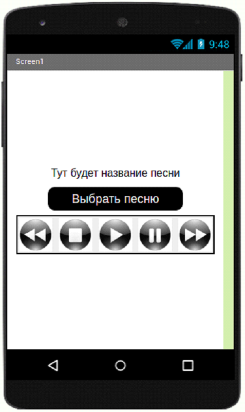

<link rel="stylesheet" href="projectStyle.css">

<section class="project-container">
	<div class="project-container__logo">
		
	</div>
	
	<p class="project-name">Проект 2: Музыкальный плеер</p>
	<div class="description-block">
		<article class="description-block__text">
			<div class="logos">
				<!--  -->
			</div>
			
			<p>Проигрыватель – это программа, которая воспроизводит файлы мультимедиа-контента (звуки, мелодии и т.д.). В наше время существует достаточное количество разных проигрывателей, но почему бы не попробовать создать свой уникальный проигрыватель!</p>

			<p>Задание. Используя программу APP Inventor, создать проигрыватель, который будет воспроизводить музыку, при этом, пользователь сам может управлять каждой мелодией с помощью: PLAY, PAUSE, STOP.</p>

			<p>Требования:</p>
			<ul>
				<li>Создать приветствующий (главный) экран</li>
				<li>Добавить список аудио файлов (звуки, песни, мелодии)</li>
				<li>Создать три кнопки: PLAY, PAUSE, STOP, PREV, NEXT.</li>
			</ul>

			<p>Компоненты: Надпись, ВыборИзСписка, Горизонтальное расположение, 5 кнопок, Проигрыватель</p>

			<p>Пользователь может выбрать аудио файл из списка. Аудио файл должен воспроизводиться при нажатии на него.</p>
			<p>Пользователь может управлять им при помощи трех кнопок.</p>

			<div class="description-block__image">
				
			</div>
		</article>
	</div>
</section>